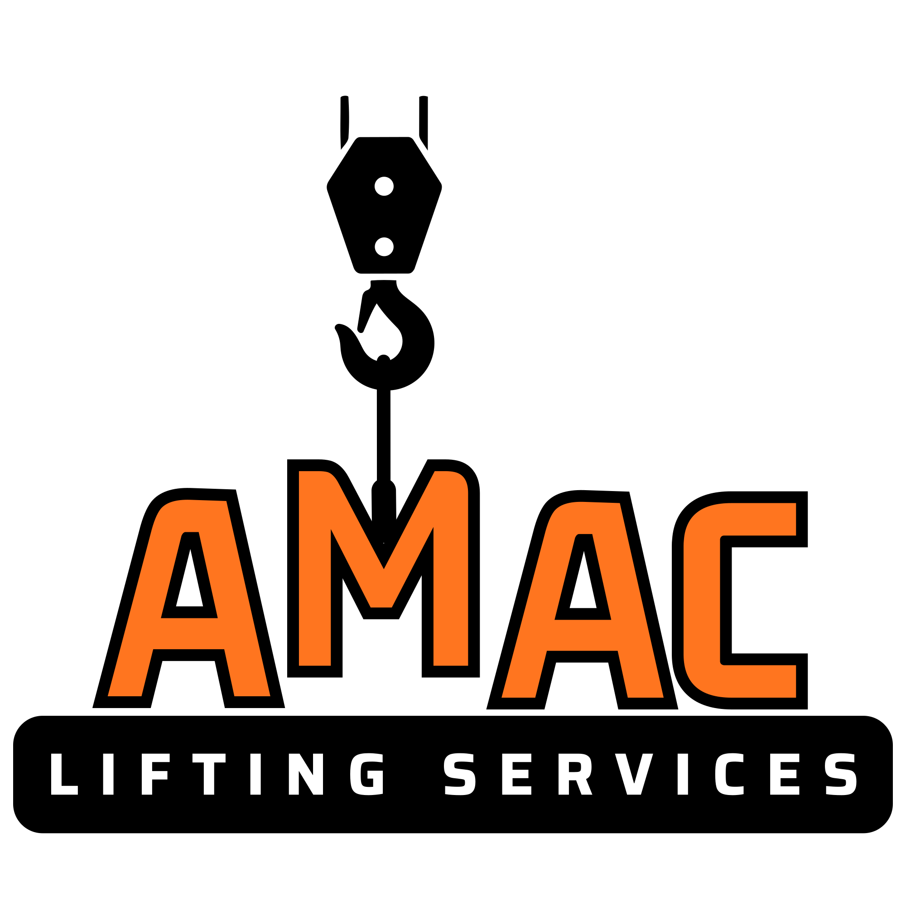

AMAC Lifting Services
Lifting Equipment Inspections & Lift Planning You Can Trust
AMAC Lifting Services provides thorough LOLER inspections, loose tackle examinations, and expert lift planning for operations of all sizes — carried out by a qualified approved examiner with years of hands-on experience. Learn more about our services.
Get in TouchAbout Us
AMAC Lifting Services is a Lincolnshire-based lifting equipment inspection and lift planning specialist, founded on years of hands-on industry experience. We work with clients across Lincolnshire and beyond, travelling to your site to deliver thorough, professional inspections and expert lifting consultancy. As a fully qualified approved examiner and lift planner, we understand the pressures that come with keeping a site compliant and a team safe. That's why we take the hard work off your hands — providing clear, reliable assessments and practical guidance you can act on with confidence. No matter the scale of your operation, you can expect the same high standard of professionalism, expertise, and care on every visit. Learn more about our services.
What We Do
LOLER Inspections & Loose Tackle Examinations
We carry out comprehensive inspections of your lifting equipment and loose tackle in full compliance with LOLER regulations and HSE guidelines. All inspections are completed by a qualified and approved examiner, and you'll receive a formal inspection certificate upon completion — keeping you legally covered and your site safe. Get in touch for a quote.
Lift Planning
Planning a complex lift? Whether you're moving heavy loads on a construction site, relocating equipment, or working on specialist projects such as bridge movements onto motorways, we handle the full picture. We calculate the crane size required, establish where it needs to be positioned, determine the right chains and rigging, and confirm who should be operating — so nothing is left to chance. Contact us for lift planning.
On-Site Inspections
We come to you. Our examiner will visit your site to carry out inspections at a time that suits your schedule, minimising disruption to your operations. Book an on-site inspection.
Frequently Asked Questions
What is LOLER and why do I need it?
LOLER stands for Lifting Operations and Lifting Equipment Regulations 1998. It requires that all lifting equipment is thoroughly examined by a competent person at regular intervals to ensure it's safe to use. Non-compliance can result in fines, legal action, and most importantly, workplace accidents.
How often do I need LOLER inspections?
Inspections are required every 6 or 12 months depending on the equipment and its usage. High-risk or frequently used equipment needs more frequent checks. We can advise on the exact schedule for your operations.
Do you provide lift planning for construction sites?
Yes, we specialise in lift planning for construction, engineering, and industrial projects. This includes calculating crane requirements, positioning, rigging, and ensuring all safety protocols are followed.
Are your inspectors qualified?
Absolutely. Our lead examiner is a fully qualified and LEEA-approved competent person with extensive experience in lifting equipment inspections and lift planning.
Get in Touch
Whether you need a LOLER inspection, a lifting equipment certificate, or expert advice on planning a complex lift, we're here to help. Get in touch today and we'll get back to you as soon as possible.
Email: info@amacliftingservices.co.uk
Phone: 07513154202